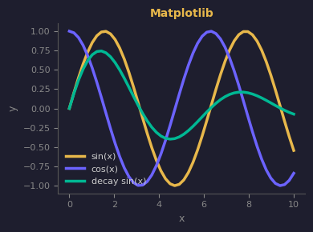

Centres d'interet
Basketball
Accessoirement je fais 1m65 et je joue au basketball. On dit que je suis "shifty" — laissez-moi rever, un jour on me verra peut-etre en playoffs. (Bon deja le championnat interclasse ce serait un bon debut.)
Python mon amour
Je code en Python comme on respire. Projets web, data science, scripts CLI, APIs, automatisation — si ca peut se faire en Python, je vais le faire en Python. Point.

Data Science & ML
Ma specialisation visee. Faire parler les donnees, entrainer des modeles, predire le futur (bon, le passe aussi). Pandas, NumPy, scikit-learn — ma stack preferee.
Veille techno
Toujours un oeil sur ce qui sort. Github trending, Hacker News, Reddit. Le domaine bouge vite, j'essaie de suivre — et si possible d'arriver avant la hype.
Striving For All
Membre actif de Striving For All (SFA), je partage ce que j'apprends parce que la connaissance qui ne se partage pas ne sert a rien.